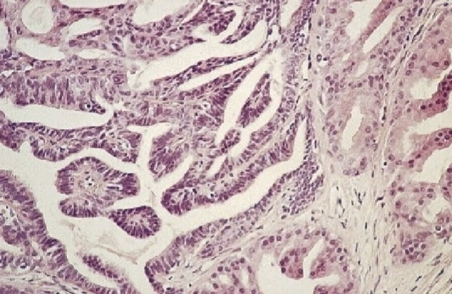
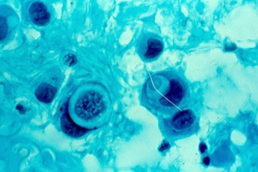

Topic Title
Vaginal Cytology
- Vaginal cytology performed routinely on women with cervical neoplasia
- Typically hysterectomized patients
- Vaginal vault smears recommended 6 and 18 months after hysterectomy
- Also recommended for patients with CIN as a follow up
- Reasons for Glandular Cells in Vaginal Vault smear
- Sub-total hysterectomy | Adenocarcinoma: recurrent, metastatic or primary
- Vaginal endometriosis | Cytologic effects of 5-fluorouracil or previous CO 2 laser ablation
- Vaginal adenosis | Rectovaginal fistula
- Mesonephric duct remnants | Reparative fibroblasts in ulcers and granulation tissue
- Fallopian tube prolapse | Reparative squamous parabasal and basal cells resembling columnar or goblet cells
Vaginal Cytology
- Few, rare benign tumors specific to vaginal canal
- Most are stromal located in the submucosa
- Only picked up if ulcerated as only surface epithelium is scraped
- Most common benign lesion is fibroepithelial stromal polyp
- Primary cancers of vaginal canal extremely rare
- Most malignancies are metastatic lesions or direct extension
- VAIN=vaginal intraepithelial neoplasia (used in histology only)
- Squamous cell carcinoma is the most common malignancy
- Occurs in women in 60s to 80s
- Typically non-keratinizing SCC, with some association with HPV
- Adenocarcinomas are associated with DES association (clear cell carcinoma)
- Primary melanoma and rhabdomyosarcoma-other rare primary malignancies
Vulvar Cytology
- Cytology is useful when biopsy is not possible or indicated
- Good method of following up on patients, safer than biopsy in some situations and it provides a rapid diagnosis.
- Cytology is limited because biopsy provides specific answers, may not sample underlying lesions
- Cytology often sampled with scraping with scalpel
- Area should be moistened with saline
- Touch imprints- press an alcohol wet slide on the surface of a biopsy or ulcer
- FNA -for solid and cystic subcutaneous lesions
- Rare lesions make vulvar samples unfamiliar.
- Vulva samples are NOT signed out using the Bethesda System
- Descriptive terminology same as Non-Gyn reporting
- VIN- vulvar intraepithelial lesion is histologic description for precursor lesions
Vulvar Cytology
- Benign and malignant conditions observed in vulvar samples
- Infectious agents:
- Bacterial infections
- Cultures are needed to identify specific type of bacteria. May occur with or without abscess formation
- Cytology-If abscess formation, pattern of numerous neutrophils, cellular debris and bacterial organisms
- Fungal Infections
- More common in immunocompromised patients.
- All listed are non-specific
- Need cultures to specify
- Candida- frequent and easy to recognize. More common in AIDS patients
- Parasites
- Schistosoma, trichomonas, enterobius vermicularis and entamoeba histolytica identified by morphologic feature.
- 4. Viral Infections
- Herpes 2 infects genitals- syncytial fragments with cells containing dense basophilic cytoplasm
- Same classic features-multiple, molding nuclei with ground glass chromatin and nuclear margination
- Molluscum Contagiosum- Poxvirus, large orange cytoplasmic inclusions (appear similar to pollen)
- Autoimmune disorder against desmoglein3 cadherin
- Lysis of desmosomes-cell adhesion loss
- Acantholysis of skin and mucous membrane
- Does not affect layer between parabasal and connective tissue layers
- Layer of parabasal cell-Tzanck layer=Tzanck cells
- Mouth, cervix and vulva
- Vesicles and bullae lesions- bleed when scraped
- Cytology:
- Sheets and clusters of parabasal and intermediate cells with brown to blue cytoplasm.
- Round to oval central nuclei with coarse regular chromatin. Often multi-nucleated.
- Eosinophilic stain in cytoplasm around nucleus
- Prominent varying nucleoli
- Differential: Poorly-differentiated adenocarcinoma, repair
- Pemphigus vulgaris=Tzanck cells
- Benign tumor of apocrine (sweat gland) origin
- Common in middle age Caucasian women
- Presents as a single, well circumscribed mobile mass
- Sampled by FNA or imprint smears
- Eosinophilic columnar cells overlying stromal cells
- Stromal cells papillary formations
- VIN-precursor lesions to carcinoma
- Undifferentiated type associated with HPV 16
- Differentiated type no HPV association
- Squamous cell carcinomas are 90% of vulvar malignancies
- Most common is well-differentiated KSCC
- Keratinizing squamous carcinoma associated with differentiated VIN
- Moderately to poorly differentiated non-keratinizing SCC associated with undifferentiated VIN
- Patterns are identical to cervical SCC
- FNA of inguinal lymph nodes common for evaluating metastatic squamous cancer of vulva
- Basal Cell Carcinoma
- Common skin cancer
- Rare on vulva or labia majora
- Small basal to parabasal type cells
- Palisading pattern
- Malignant melanoma
- Second most common malignancy
- Develop in an existing nevus
- Bartholin’s Adenocarcinoma
- Adenocarcinoma arising in Bartholin's glands
- Rare, intraepithelial adenocarcinoma
- Common in elderly women
- Presents as eczema, causes itching and irritation.
- Often overlays a co-existing malignancy
- Not so in most cases of vulva
- Paget’s cells- large parabasal type cells with granular amphophilic cytoplasm, which occur singly or in clusters
- Transition zone between anus and rectum susceptible to HPV infection
- Precursor to squamous cell carcinoma and invasive squamous cell carcinoma
- Anal cancers occur in both genders
- MSM and women, rising in women
- Associated with HPV 16 and 18
- HIV infection also risk factor-dysplasia rates higher
- High risk individuals main recipients of testing
- TBS provides guidelines reporting anal Paps
- Lower AnoSquamous Tract reporting for histologic samples
- AIN-anal intraepithelial lesion used for histology
- Follow up is anoscopy (similar to colposcopy)
- Pap taken with moistened swab from distal rectum to anal region
- 2,000 to 3,000 cells needed for adequacy
- Surepath= 3 to 6 cells per 40x field, ThinPrep 1-2 cells per 40x field
- Rectal (glandular cells) and metaplastic cells indicate T-zone sampling
- Normal samples show more mature cells
- Anucleated squames frequently present
- Rectal columnar cells, bacteria and fecal contaminate present
- Candida, herpes and enterobius may be observed
- Changes are same as cervical SILs
- Condylomatous changes-kolicytosis but with less cavity formation
- Dyskeratocytes and parakeratotic plaques
- Metaplastic changes occur in T-Zone-look for dysplastic nuclei
- Classic features of HSIL-high N/C ratios
- Nuclear contour irregularities
- Increase in hyperchromasia
- Chromatin clumping
- Important feature
- Important feature
- Important feature
- MORPHOLOGY
- Author. Title of article. Journal Name. Year;Volume(Issue):Pages.
- Author. Title of second article. Journal Name. Year;Volume(Issue):Pages.
Pemphigus Vulgaris-Benign
Papillary Hidradenoma

Malignant Neoplasms
Malignant Neoplasms
Paget’s Disease

Anal Pap Test
Anal Pap-Recap
Anal Pap Test
Epithelial Cell Abnormalities
Key Features
Key Point
Add an important concept that you want to remember.
Cytologic Findings
Describe the cytologic findings here.
XXXXX Cells
Key Features
Differential Diagnosis
| Entity | Distinguishing Features |
|---|---|
| Example | Describe the distinguishing features. |
Images